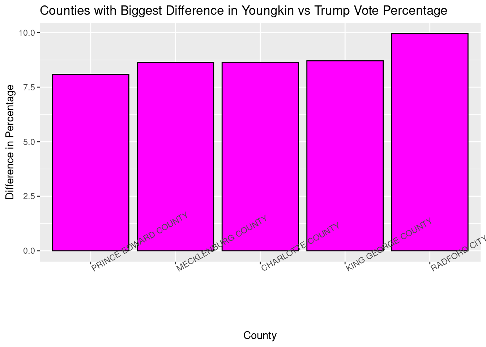
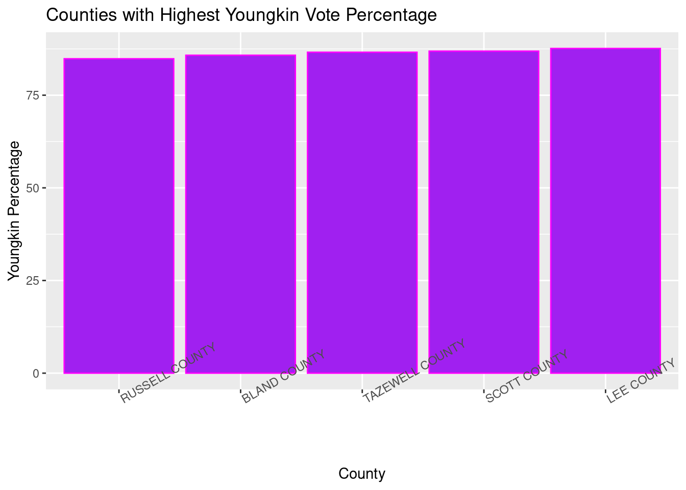
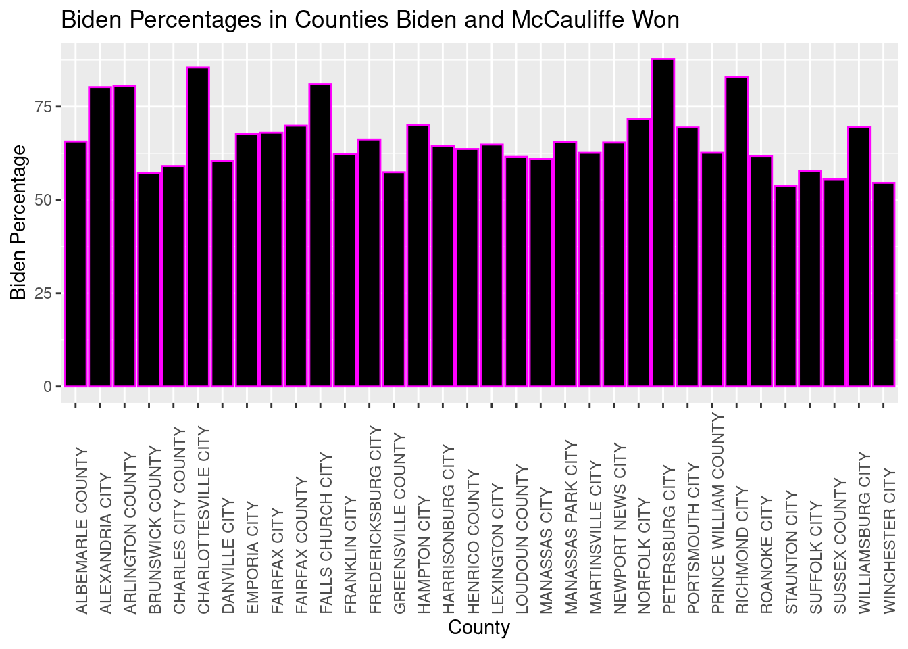

#load saved joined data file from previous script
joined_vacomparison <- readRDS("joined_vacomparison.rds") #I uploaded this RDS file to my RStudio project, so I just have to tell the program where to look for itVirginia Election Data Analysis
For this project, I was given real data from the 2020 presidential election in the state of Virginia. I was to find relationships between variables and show information I found interesting using R packages. The following is a walkthrough of my completion of the project, with comments included in the code.
First we’ll need to load the necessary libraries so our code works right. For this project, I used “DT”, “tidyverse”, “janitor”, “httr”, “jsonlite”, “kableExtra”, and “here”.
We want to look at the already processed data of the Virginia presidential and governor election, so therefore we will be using an RDS already downloaded, which should also be the case if you’d want to individually work with this data. This is how you would do that:
This way, we have extra columns with percentages and a dataset that is comprised of two previously joined datasets after using the inner_join() and mutate() functions. Here’s a look at the raw data table:
DT::datatable(joined_vacomparison)TASK 1) Include code to a new column to the dataset calculating the difference between the percentage of the vote Youngkin received and what Trump received.
Since we already have very helpful, previously created columns that tell us the percentage of the vote that Youngkin received and the percentage that Trump received, all we have to do is use a simple mutate() equation and name the column.
joined_vacomparison <- joined_vacomparison %>% #this is where the new column we're creating will go
mutate( #mutate function to add columns to a data table
Youngkin_Trump_difference = (pct_youngkin - trump_pct) #calculating the percentage of youngkin votes - percentage of trump votes and saving the new column as "Youngkin_Trump_difference
)TASK 2) Use this new column to find the Top 5 counties with the highest differences between Younkin/Trump percent, and then create a well-labeled chart to visualize them.
There’s two steps to this problem. First, we need to find a way to specify the top 5 counties with the highest differences in vote, but that will be easy considering we just made a new column that calculates the difference for us.
highest_difference_counties = joined_vacomparison %>% #we are calling this new object that contains the biggest differences "highest_difference_counties"
arrange(desc(Youngkin_Trump_difference)) %>% #arranging in descending order so we can easily pull the top 5
head(5) #function that gives us only the first 5 in the new data table Now that we have the top five counties according to the difference in the Youngkin vs Trump vote percentages, we can use ggplot to make a chart and visualize them.
ggplot(highest_difference_counties, aes(x = reorder(locality, Youngkin_Trump_difference), y = Youngkin_Trump_difference)) +
#we are telling ggplot to order the x axis variables based on the y variable, in this case being the difference in the vote percentage
geom_col(color = 'black', fill = 'magenta') + #how the chart will be colored
scale_y_continuous(name = "Difference in Percentage") +
scale_x_discrete(name = "County") +
labs(title = "Counties with Biggest Difference in Youngkin vs Trump Vote Percentage") + #naming the chart
theme(axis.text.x=element_text(angle = 30, hjust = 0)) #adjusting rotation of the county on x axis so we can clearly read the names of the counties 
TASK 3) Create a chart that shows the Top 5 counties based on where Youngkin got the highest percentage of the vote
Now we just need to make a few changes to the process we just did and focus only on Youngkin. It will be another two-step process. First, finding the top 5 counties according to Youngkin’s percentage, then creating the chart.
top_youngkin_pcts = joined_vacomparison %>% #our new object where the data will be saved
arrange(desc(pct_youngkin)) %>% #arranged in descending order according to the pct of the vote youngkin received
head(5) #now we can easily take the top 5 counties with the newly sorted data Now that we’ve distinguished the top 5 counties according to the Youngkin vote, we can make a chart with the data.
ggplot(top_youngkin_pcts, aes(x = reorder(locality, pct_youngkin), y = pct_youngkin)) +
#we plug in the data to be plotted, then say that we want the x axis to be ordered by the percentage of the youngkin vote, then specify that the y axis will be this percentage
geom_col(color = 'magenta', fill = 'purple') + #coloring the chart
scale_y_continuous(name = "Youngkin Percentage") + #naming our y axis variables
scale_x_discrete(name = "County") + #naming our x axis variables
labs(title = "Counties with Highest Youngkin Vote Percentage") + #title of the chart
theme(axis.text.x=element_text(angle = 30, hjust = 0)) #angling the text of the x axis variables to make them readable
As you can see from our newly created chart, the top five counties are all pretty even with each other for this particular comparison.
TASK 4) Create a table that shows the Top 5 counties based on where McCauliffe got the highest percentage of the vote
The first part of this process will be almost identical to the last, but for a new candidate. Then, we’ll select the variables we wish to display in a table and plug these into the DT function to give us a new table.
Step 1: organizing the data we’ll be plugging into ggplot:
top_mccauliffe_pcts = joined_vacomparison %>% #our new object where the data will be saved (now McCauliffe instead of youngkin)
arrange(desc(pct_mcauliffe)) %>% #arranged in descending order according to the pct of the vote McCauliffe received
head(5) #again can easily take the top 5 counties with the newly sorted data Step 2: plugging in our new variables to then output an organized, searchable table:
only_mccauliffe_pcts <- top_mccauliffe_pcts %>% #creating a new object where only the data we want will be stored
select(-biden, -trump, -youngkin, -pct_youngkin, -biden_pct, -trump_pct, -Youngkin_Trump_difference)
#here we are using the select() command to delete columns we don't want in our table, and since right now we are only concerned with McCauliffe's percentage of the vote, that's all we'll need
DT::datatable(only_mccauliffe_pcts) #so when we plug our new object into our DT function, we are left with an organized table of the top counties where McCauliffe's vote percentages were highest TASK 5) Based on your own analysis, explain a finding of your choosing, include a narrative explaining it to the audience and then create either a chart or table displaying it.
I thought it would be interesting to only look at counties that had more than 10,000 votes for each presidential candidate and to then see which candidate was more popular with the counties with a larger number of voters. So to do that, I created two new objects that only included counties that fit the 10,000 vote minimum and then looked at, of those counties, how often Biden won vs Trump.
big_counties <- joined_vacomparison %>% #making a basic data set with only large voting populations so we can use it later
filter(biden > 10000, #want biden and trump numbers to be above 10000
trump > 10000)Even though this is all we’ll need for the table, below is how we can see how many times Trump received a higher number of votes in large counties compared to Biden in large counties.
big_counties_biden <- joined_vacomparison %>% #this will be the object that consists of when Biden had more votes than Trump
filter(biden > 10000, #this is the number of Biden votes, which we want to be greater than 10,000
trump > 10000, #and this is the number of Trump votes
biden > trump) #this line ensures that only counties where Biden had more votes than Trump were pulled from the data
big_counties_trump <- joined_vacomparison %>% #same thing as last time, except now we're looking for the counties where Trump got more votes than Biden
filter(biden > 10000, #same minimum requirements
trump > 10000,
trump > biden) #we want the number of votes for Trump to be greater than the number of votes for Biden
nrow(big_counties_biden) #by using the nrow() function, we see how many total rows there are in our filtered data sets, which also means it tells us how many counties Biden one, saving us object to use later "biden_won"[1] 21nrow(big_counties_trump) #and here tells us how many Trump won (or at least, got the larger portion of the vote)[1] 11We’ll make a table for our “big_counties” data to be able to easily sift through the data for Trump and Biden votes in counties with large voting populations.
big_counties_trump_biden <- big_counties %>% #making a new object only with the necessary variables
select(-youngkin, -mcauliffe, -pct_youngkin, -pct_mcauliffe, -Youngkin_Trump_difference) #we just want to look at Trump and Biden data in this table, so we get rid of these columns
DT::datatable(big_counties_trump_biden) #use DT to make interactive table for the counties with > 10,000 votersAnd now we have a table to use for when we only want to see counties that had over 10,000 people vote for both parties in the 2020 presidential election.
TASK 6) Based on your own analysis, explain a second finding of your choosing, include a narrative explaining it to the audience and then create either a chart or table displaying it.
Since Biden and McCauliffe both ran as representatives of the Democratic party, I thought it would be interesting to analyze how often Biden won when both he and McCauliffe received over 50% of the vote for a county.
dem_win <- joined_vacomparison %>% #new data will be named dem_win and comes from our original data set
filter(biden_pct > 50.00, #want biden_pct column over 50
pct_mcauliffe > 50.00) %>% #want pct_mccauliffe column over 50 as well
select(-trump, -biden, -mcauliffe, -youngkin, -pct_youngkin, -Youngkin_Trump_difference, -trump_pct) #getting rid of any variables that don't have to do with Biden or McCauliffe's pct of the vote
total_dem_win <- nrow(dem_win) #we can use the nrow() function to see how many times Biden and McCauliffe have both won over 50% of the vote, which comes out to be 34
total_dem_win [1] 34There are 34 cases in which both Biden and McCauliffe won over 50% of the vote, but we want to see the Biden percentages in those counties. So now we’ll make a chart displaying them.
ggplot(dem_win, aes(x = locality, y = biden_pct)) + #using our new dataset with only Biden and McCauliffe getting over 50% of the vote
geom_col(color = 'magenta', fill = 'black') + #coloring the chart
scale_y_continuous(name = "Biden Percentage") + #naming our y axis variables
scale_x_discrete(name = "County") + #naming our x axis variables
labs(title = "Biden Percentages in Counties Biden and McCauliffe Won") + #title of the chart
theme(axis.text.x=element_text(angle = 90, hjust = 0)) #angling the text of the x axis variables to make them readable
TASK 7) Based on your own analysis, explain a third finding of your choosing, include a narrative explaining it to the audience and then create either a chart or table displaying it.
Because Youngkin and Trump are both members of the Republican party and McCauliffe and Biden are both members of the Democratic party, I thought it would be interesting to see how often the results of the presidential vs governor election were two different parties. Particularly, I wanted to see when Biden had a larger percentage of the votes but Youngkin won the percentage of the votes for governor. The first thing we need to do to find any of these instances is filter the data.
biden_youngkin <- joined_vacomparison %>% #new data regarding when Biden and Youngkin both won as they are from different parties
filter(biden_pct > trump_pct, #filter so we only see counties where the Biden percentage was higher
pct_mcauliffe < pct_youngkin) #and also filter so we only see counties where the Youngkin percentage was higher Now we want to display these results in a table so we can search the counties of the mixed election results as we please. First, as we have done in the past, we only want to show in the table the columns that are relevant to why the table is being created so:
biden_youngkin_cleaned <- biden_youngkin %>% #cleaning out the columns we want
select(-biden, -trump, -youngkin, -mcauliffe, -Youngkin_Trump_difference) #using the select to delete unnecessary columns
DT::datatable(biden_youngkin_cleaned) #using DT feature to show our new cleaned out data